Introductie
In dit deel van mijn portfolio kan gelezen worden hoe ik in de twee week durende projectweken met mijn team heb samengewerkt om een escape room te bouwen. Om mee te beginnen kunnen hier mijn dag verslagen gelezen worden. Daarnaast zal kan het eindproduct uitgelegd worden met een video ter ondersteuning. Als laatste sluit ik af met een reflectie.
Proces
Dag 1
Deze eerste dag heb ik kennis gemaakt met de groep waarmee ik de komende twee weken mee ga werken. Na het kennismaken hebben we onze opdrachten van ons portfolio besproken om wat inspiratie op te doen en onze interesses duidelijk te maken. Om onze planning duidelijk te maken, werken we met een scrumbord. Deze eerste dag hebben we mindmaps en schetsen gemaakt, daarnaast zijn we nog gaan testen met de verschillende sensoren die we van school konden gebruiken. We hebben de sensor van leap uitgeprobeerd en een touch board waarmee onder andere een digitale piano gemaakt kan worden. Morgen gaan we nog meer sensoren en knoppen testen.
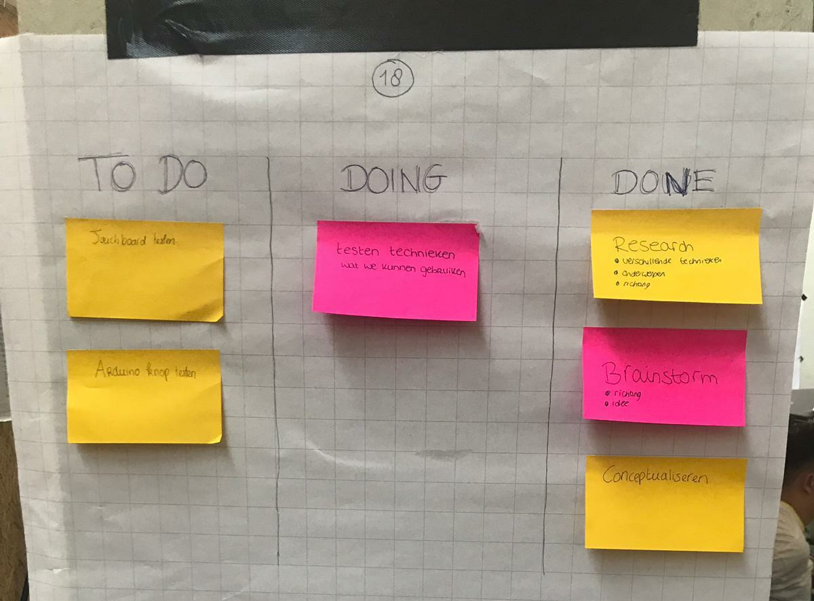Dag 2
Deze dag begonnen we met een gezamenlijk gesprek om te bespreken wat we vandaag wouden bereiken. Na dit besproken te hebben, ben ik gaan experimenteren met de Makey Makey Go, we zijn er achter gekomen dat we met dit apparaat van veel objecten een interactief object kunnen maken. Toen we eenmaal goed wisten hoe dit apparaat werkte, ben ik samen met Femke naar de supermarkt gegaan om een rol aluminiumfolie te halen. Dit aluminiumfolie hebben we gebruikt om een eerste prototype te maken van aanraakbare knoppen. Na snel simpele knoppen te maken met het aluminiumfolie en te constateren dat het goed werkte, ben ik verder gaan testen met knoppen uit mijn Arduino kit, deze knoppen werkte goed. Echter kwam ik er wel achter dat iemand altijd het draad moet aanraken omdat de Makey Makey anders niks doet wanneer de knop ingedrukt wordt. Na geëxperimenteerd te hebben met de Makey Makey zijn we verder gegaan met het touch board. Morgen zullen we nog meer gaan experimenteren met het touch board, deze is namelijk moeilijker te begrijpen in vergelijking met de Makey Makey.

Dag 3
In de ochtend hebben we een gastcollege gekregen van Joost Broekens, hij heeft veel verstand van artificial creatures. Na geluisterd te hebben naar het gastcollege en enige inspiratie opgedaan te hebben, zijn we verder gegaan met het onze experimenten met de verschillende sensoren. We zijn begonnen met het touch board, na een enkele tijd experimenteren en onderzoek doen, hadden we het voor elkaar om aan ieder van de aanrakingsgevoelige een letter te koppelen. Dit betekende dat we het touch board als een toetsenbord konden gaan gebruiken, deze ontdekking maakte voor ons een hoop mogelijk! We gingen nu dit mogelijk was veel verschillende applicaties proberen te besturen. Onder deze tekst staat een video van het spel Clone Hero, door de verschillende noten in te stellen met behulp van het touch board konden we dit spel besturen. Dit was erg leuk en hebben we een paar mensen buiten onze groep ook laten spelen! Wat voor soort game we zelf gaan maken om gebruik te maken van deze knoppen zijn we nog aan het bespreken. Het bord met vijf aluminium knoppen hebben we gemaakt door houten plankjes in te winkelen met aluminiumfolie, deze planken hadden we bij de Gamma gehaald.
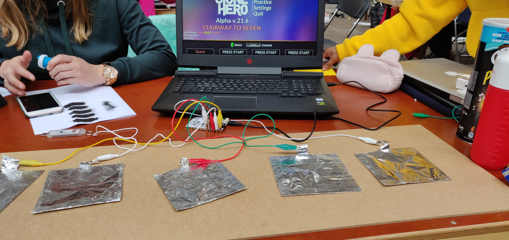Video door: Femke van der Burg
Dag 4
Deze dag zijn we veel bezig geweest met een beter prototype bouwen met verschillende aanraakbare knoppen van Aluminium. Dit hebben we gebouwd zodat we het het touch board makkelijker kunnen gebruiken. Verder hebben we tijd besteed aan het uitproberen van verschillende programma’s om zelf een game te maken die we dan kunnen besturen met het touch board. We hebben onder andere unreal engine en unity geprobeerd, deze waren echter lastig te begrijpen. Naast de mogelijkheid van een game maken, denken we nu ook na over andere concepten om onze opties te verbreden. Morgen gaan we ons nog meer verdiepen in de mogelijkheden van ons touch board, daarnaast hebben we afgesproken om thuis verder na te denken over interessante concepten om te bespreken met de groep. Onder deze tekst kan een video gezien worden van een spel waar we mee bezig waren en een foto van ons scrumboard.
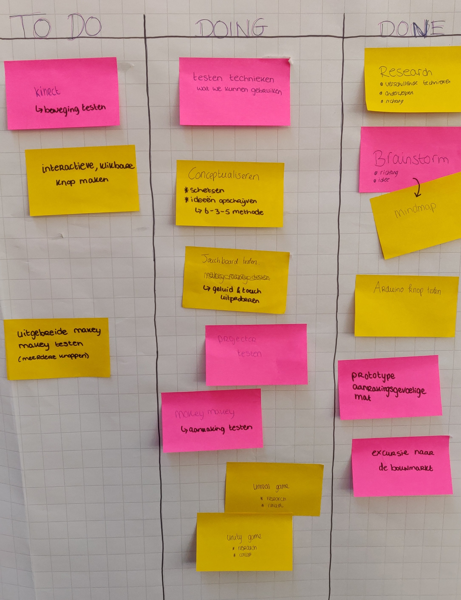Video door: Femke van der Burg
Dag 5
Vandaag zijn we weer veel bezig geweest, Ik heb samen met Femke een prototype voor een kluis gemaakt met behulp van onze Arduino kits. Deze kluis wordt geopend wanneer een speler de juiste combinatie knoppen indrukt. De deur zou geopend worden door een servomotor die draait wanneer de juiste code ingedrukt wordt. Naast het maken van dit prototype voor een kluis zijn we bezig geweest met het programma Processing. Met behulp van dit programma hebben we het spel Pong gemaakt. Dit spel konden we na wat testen, besturen met ons aluminium bord wat we voor onze eerdere experimenten gemaakt hadden. Het spel wordt gespeeld door twee spelers en werkt met scores. Na onze ideeën aan onze docenten voorgesteld te hebben, hadden zij het gevoel dat we meer kunnen bereiken deze HCI-weken en zien zij ruimte voor verbetering, daarom gaan we komende projectdag en in het weekend verder werken aan een uitgebreider concept.
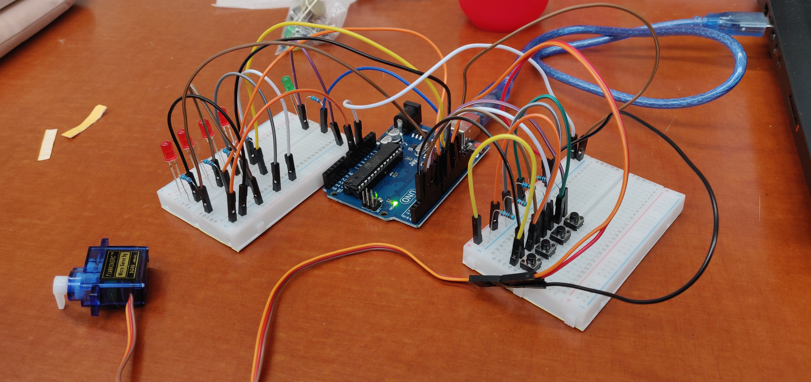Video door: Femke van der Burg
Dag 6
Na het weekend zijn we na een goede brainstorm en veel overleg tot een nieuw idee gekomen, we gaan enkele van onze eerdere concepten aanpassen en daarna gebruiken om deze samen te voegen tot een soort escape room. De deelnemer moet bij het betreden van onze installatie de challenges voltooien, hij/zij zal hier dan letters of cijfers van krijgen die ingevuld zullen worden op de kluis die we gaan maken. In deze kluis zit dan een object waarmee de deelnemer de ruimte kan verlaten. Vandaag zijn we naar de Gamma gegaan om planken en andere materialen te halen om te beginnen met het bouwen van dit concept. Ik ben gelijk aan de slag gegaan met het bouwen van de kluis met hulp van wat projectleden. Daarnaast zijn we begonnen met het bedenken hoe we alles in onze escape room gaan plaatsen. We zullen morgen nog meer planken en andere materialen halen om verder te werken. Ik ben in de avond na school ook nog verder gegaan met het programmeren van de Arduino en met het uitproberen van Ledstrips.
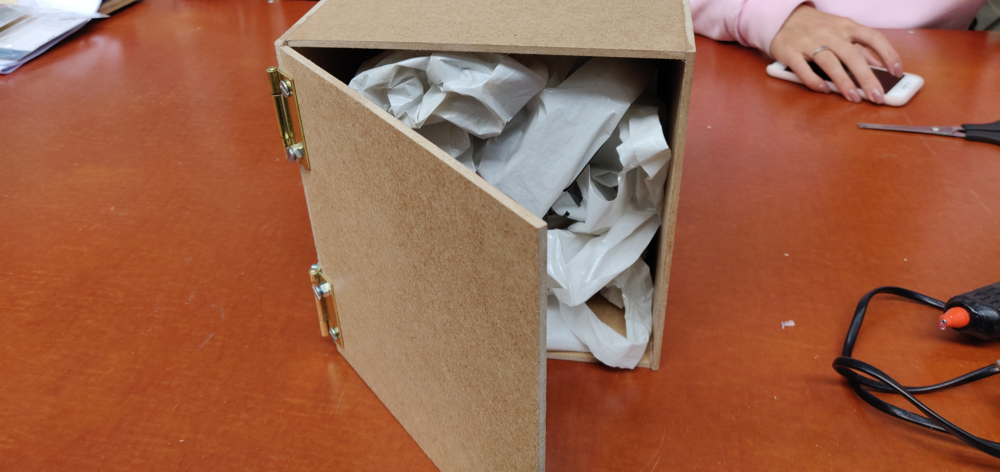Dag 7
Vandaag zijn we naar de Gamma gegaan en hebben we planken gekocht om onze kamer te bouwen, deze hebben we geverfd en in elkaar gezet met behulp van een bouwplan wat vooraf gemaakt was. In deze ruimte gaan we de resterende dagen alles installeren. Verder ben ik bezig geweest met het voltooien van de kluis, in plaats van een systeem met knoppen om de kluis te openen, heb ik er voor gekozen om de gebruiker kabels te laten trekken naar verschillende punten om zo de kluis te openen. Ze zullen bij het succesvol voltooien van de opdrachten in onze kamer de antwoorden verdienen waarmee de kluis geopend kan worden. Om dit hele systeem werkende te krijgen heb ik veel gaten moeten boren en vooraf schetsen moeten maken hoe ik alles ging aansluiten. Na hard gewerkt te hebben en school afgelopen was ben ik thuis nog verder gaan werken aan de kluis. Doordat ik thuis verder ben gaan werken is het technische deel van de kluis nu bijna af. Morgen zal ik vooral met het uiterlijk bezig zijn.
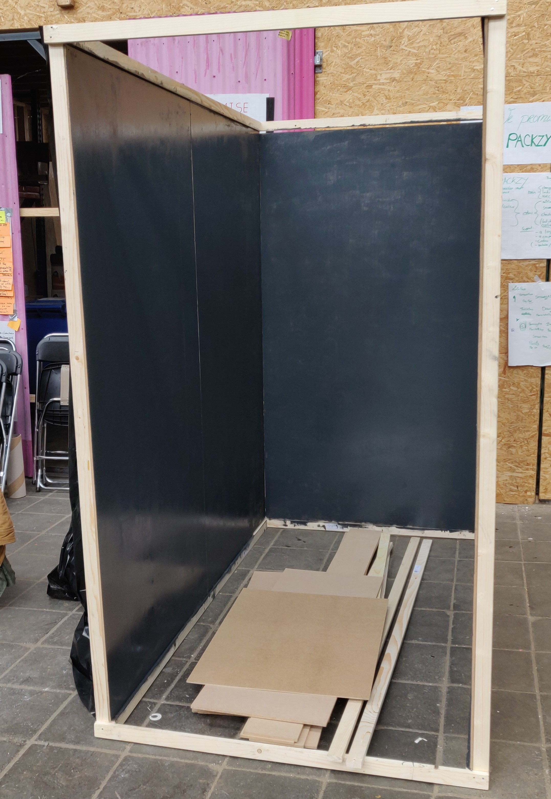 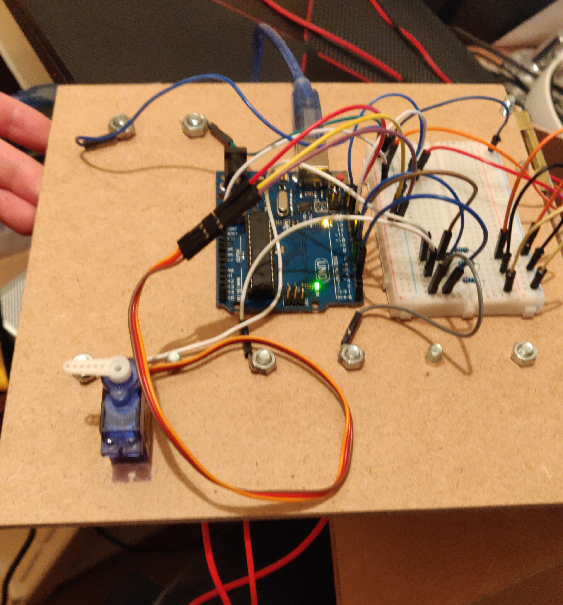Dag 8
Vandaag was alweer een van de laatste dagen, we hebben veel voor elkaar gekregen, mijn grootste taak vandaag was het afmaken van de kluis en ook een manier verzinnen om deze van stroom te voorzien tijdens de expo. Uiteindelijk heb ik na een klein onderzoek de conclusie getrokken dat ik een 9V batterij nodig had en ik hiermee de arduino en overige systemen kon voorzien van stroom. Na hard aan de kluis gewerkt te hebben en deze technisch te laten perfect te laten werken en visueel aantrekkelijk te maken, zijn we verder gegaan met onze ruimte afbouwen en verven. Eerst hebben de knoppen en het beeldscherm van het spel Pong opgehangen. Vervolgens zijn Shantusha en ik de kluis een plek gaan geven, deze is uiteindelijk bij de ingang/uitgang geplaatst. Tijdens deze dag hebben we ook een spel gemaakt waarin de speler de juiste combinatie moet zoeken. In dit spel moet de speler twee punten met elkaar verbinden waarna zij na het succesvol voltooien een letter krijgen om de kluis te openen. De speler kan de goede combinatie herkennen doordat een lampje gaat branden. Aan het eind van de dag hebben we een lijst gemaakt met taken die morgen nog gedaan moeten worden zodat niks vergeten wordt.
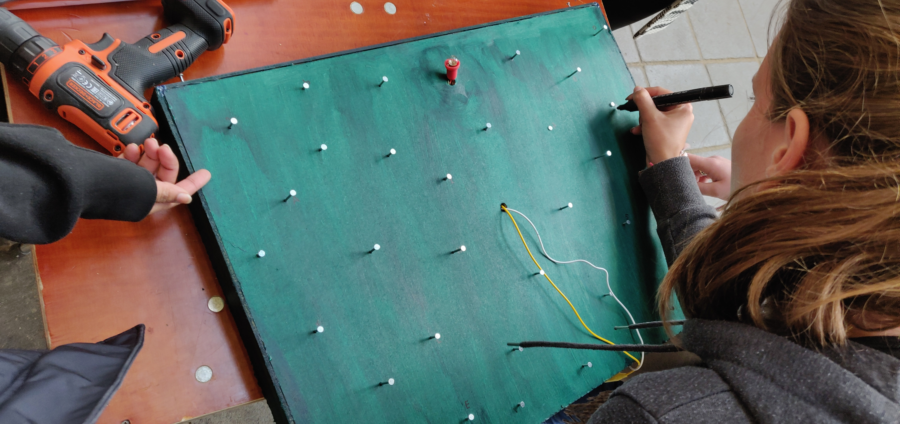 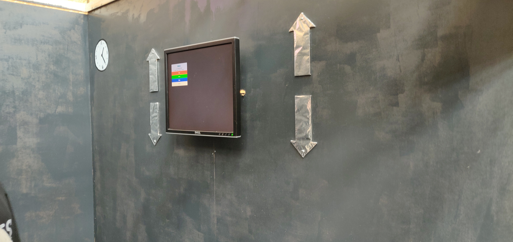 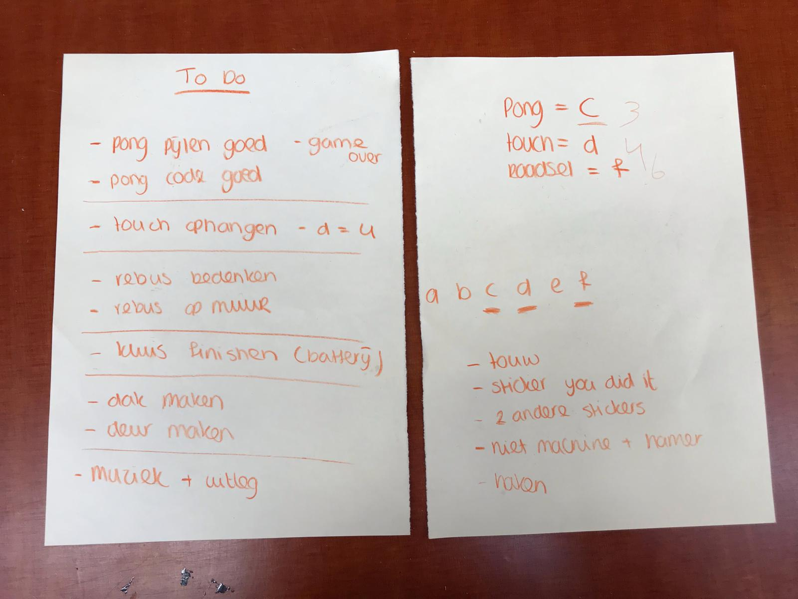Foto door: Femke van der Burg
Dag 9
De laatste dag van de HCI week is vandaag aangebroken, met de groep hadden we de dag van te voren een lijst gemaakt met taken en spullen die nog mee genomen moesten worden. Hierdoor konden we alles zonder stress afmaken. We hebben deze dag de woordpuzzel opgehangen om de laatste letter van de code te geven wanneer deze is opgelost. Hierna hebben we veel geverfd om teksten in onze escape room te plaatsen en de ruimte visueel ook echt mooi te maken. Tijdens het verven hebben we ook veel stickers opgeplakt om de escape room in het thema te krijgen van een tijdmachine. Als laatste hebben we nog een soort deur gemaakt van een plastic zeil. Deze deur deden we dicht met tyraps zodat de spelers de ruimte pas kon verlaten wanneer zij de code gekraakt hadden en met de schaar die in de kluis ligt de tyraps door konden knippen.
Nu alles klaar was, konden we met de groep pizza eten en daarna onze eerste bezoekers ontvangen, het viel ons op dat onze escape room constant een rij had en iedereen die er uit kwam erg positief was en het een leuke ervaring vonden. We kwamen er wel achter dat het tweede spel waar de spelers twee punten met elkaar moeten verbinden soms erg lang duurde, we besloten daarom om een van de punten alvast vast te maken om zo deze opdracht sneller te laten verlopen. Voor de rest verliep alles heel soepel op een enkele keer dat de batterij van de kluis het niet meer deed, dit was echter snel opgelost en werkende gemaakt. Na iedereen in onze escape room ontvangen te hebben gehad, was het tijd om de boel uit elkaar te halen en netjes op te ruimen, daar zijn we ongeveer een uurtje mee bezig geweest nadat iedereen die in de rij stond nog naar binnen was geweest. We konden namelijk niet gelijk onze escape room uit elkaar halen omdat een paar mensen nog in de rij stonden en we het leuk vonden om deze ook nog snel de ervaring te laten beleven. Het was jammer om alles waar we als team zo hard aan gewerkt hadden uit elkaar te slopen, echter heb ik nog wel als souvenir de kluis kunnen redden en mee naar huis genomen. Na teruggekomen te zijn van de expositie ben ik ook gelijk gaan slapen na twaalf uur lang actief bezig geweest te zijn!
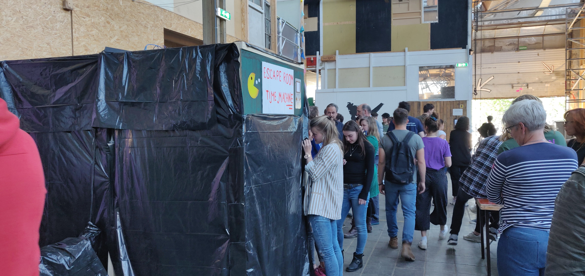 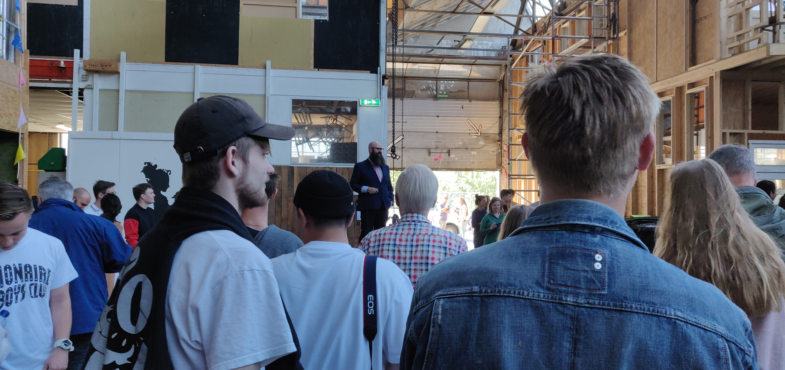